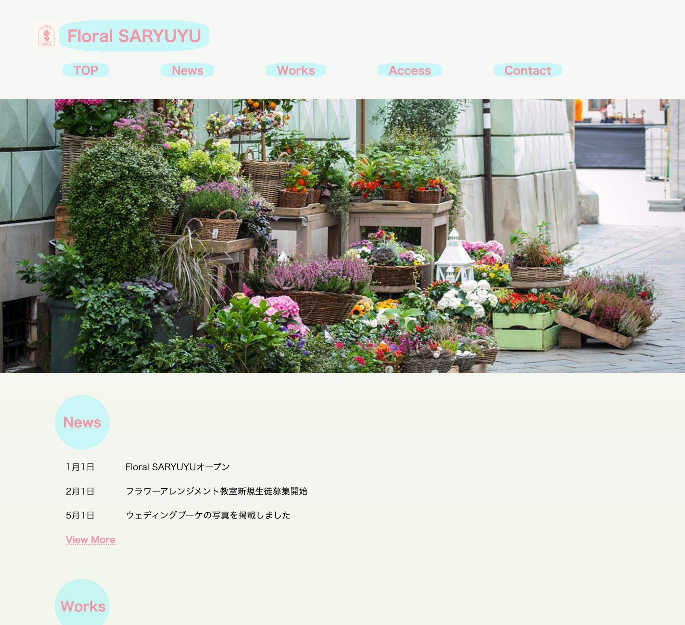

Floral SARYUYUは、東京都練馬区にあるフラワーアレンジメント教室およびフラワーショップの公式ウェブサイトです。花を通じて日常に彩りと癒しを届けることをコンセプトに、教室案内、作品紹介、イベント情報、アクセス、問い合わせなど、利用者が必要な情報を分かりやすく提供します。
フラワーアレンジメント教室の新規生徒募集や開催情報、ギャラリー（作品集）、ウェディングブーケの写真掲載など、幅広いサービス内容を紹介しています。
URL 未公開
担当
デザイン・コーディング
企画（5時間）、デザイン/イラスト制作/写真加工（6時間）、コーディング（10時間）
サイトの目的
地域の方々や花に興味のある方々に向けて、教室やショップの魅力を発信し、新規顧客や生徒の獲得を目指す。
作品やイベント情報をタイムリーに発信し、既存のお客様との関係性を深める。
オンラインでの問い合わせや予約受付を簡単にし、利用者の利便性を高める
ターゲット
50〜60代のお花好きの女性、子育ても落ち着き自分の時間を楽しめる教室や課外活動などを模索している。SNSで情報を探しているネットの活用も出来る人物
デザインについて
色彩・雰囲気：白を基調に、ピンクや淡いグリーンなど花を連想させる柔らかな色合いを採用。全体的にやさしく明るい印象で、女性やファミリー層にも親しみやすいデザインを意識しました。
レイアウト：幅広のワンカラム中心で、各セクションを大きく見やすく配置。主要な情報（ニュース、作品、教室案内、アクセス、問い合わせ）をトップページからすぐに辿れるようにしています。
ビジュアル：各ページのヘッダーには花や教室のイメージ画像を大きく配置し、視覚的な訴求力を高めています。
ナビゲーション：上部メニューやフッターに主要リンクをまとめ、どのページからも必要な情報にアクセスしやすくなっています。
アクセシビリティ：大きめのフォントや余白を確保し、スマートフォンなどのモバイル端末にも対応したレスポンシブデザインを意識しています。
コーディングについて
HTML：セマンティックなタグ（header, nav, main, section, footerなど）を用いて構造化。ニュースや作品、教室案内など各コンテンツごとに分かりやすい構成にしています。
CSS：全体の配色やレイアウト、フォント、ボタンやリンクのホバー効果、背景画像の設定などを細かく調整。線形グラデーションや半透明背景、円形の見出しなど、柔らかく華やかな雰囲気を演出しました。
レスポンシブ対応：メディアクエリを利用し、画面幅に応じてレイアウトやフォントサイズを調整。PC・タブレット・スマートフォンで快適に閲覧できるよう最適化されています。
アニメーション：フェードインを実装し、ページ遷移やコンテンツ表示時に動きをつけています。
フォーム：問い合わせページでは、テーブルレイアウトを使った入力フォームを設置し、ユーザーが簡単に情報を送信できるよう意識。